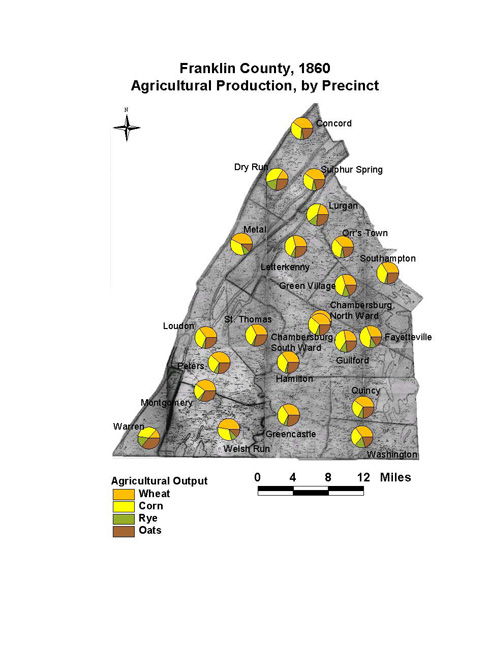

Franklin County: Agricultural Production by Precinct,
1860
Franklin County's agricultural production by voting
precinct shows the diverse mix of Franklin's farms. The county grew
mainly wheat, but significant amounts of rye as well. Dry Run,
Lurgan, Concord, and Warren precincts stand out from the other
precincts by their higher level of corn production and lower level
of wheat production.
Click on the map for a larger image.

The map is based on GIS data and soil type data derived
from a 1978 U.S. Geological Survey soil map. The map is derived
from a D. H. Davison map of Franklin County, published in 1858. The
Davison map has been georeferenced at the Virginia Center for
Digital History, using ESRI Arc Info to produce a Geographic
Information Systems map and database of households.
Note: Original precinct boundaries are not available.
Precinct boundaries were established in the GIS using Thiessen
polygons around precinct stations as central places.